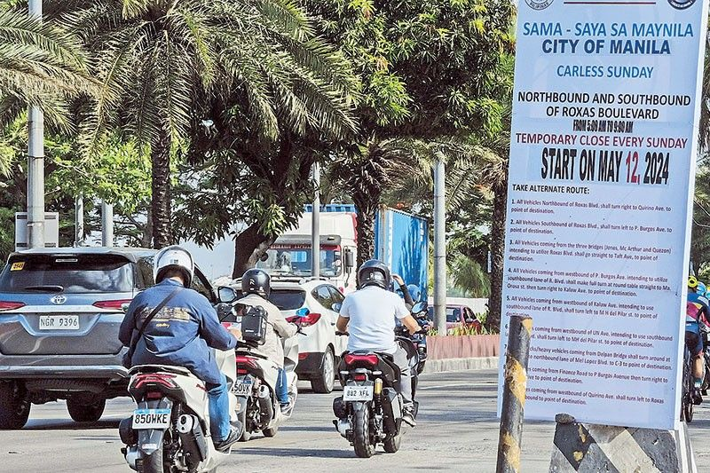

House eyes parallel probe into Bamban Mayor Alice Guo
From ABS-CBN News
Published May 13, 2024 04:41 PM PHT
Bamban, Tarlac mayor Alice Guo during a Senate inquiry on May 7, 2024. Photo from Sen. Risa Hontiveros' Facebook page
MANILA — Two congressmen on Monday expressed concern regarding the developments in the Senate probe that raised questions into the identity of Bamban Mayor Alice Guo.
Guo is accused of facilitating and backing an illegal Chinese gambling site in Tarlac's southernmost town.
At the Senate hearing, Guo said she did not have school records because she was home schooled from elementary to high school and did not go to college. Her birth was only registered when she was 17 years old.
House Assistant Majority Leader and AKO Bicol party-list Rep. Raul Angelo “Jil” Bongalon said the lower chamber could conduct a parallel investigation into the matter.
“On the issue of Mayor Alice Guo, I guess it’s a possibility to have a parallel investigation here in House of Representatives. This is very serious and at the same time very alarming, because imagine, allegedly isa pong Chinese person, was able to register herself 17 years after na siya po ay ipinanganak, so late registration po ‘yung nangyari,” he told the media.
“These are very alarming. Kumbaga mina-manipula nila ang ating mga batas ang atin pong mga proseso dito sa ating bansa and dapat po matigil ito. This is a national security issue na kailangan pong pag bigyan at pagtuunan ng pansin ng ating gobyerno,” he said.
Another lawmaker described Guo's background as "shady."
“Medyo shady talaga ‘yung nangyari… Kasi parang di mo alam kung saan ka nanggaling. Parang ganon ‘yung dating. Kahit sino naman siguro sa’tin dito alam kung saan kayo nag-aral, sino ‘yung mga ganitong relevant na tao, saka mga importanteng highlights ng buhay mo,” House Assistant Majority Leader and La Union First District Rep. Francisco Paolo Ortega added.
Bongalon reminded the Commission on Elections to thoroughly screen candidates for the upcoming midterm elections.
“Lookout ito ng ating Commission on Elections, na dapat i-screen nila lahat ng mga kakandidato ngayong darating na midterm election, na dapat sila po ay nagsasabi ng totoo... So, dapat talaga tignan ito ng ating gobyerno,” he said.

Manila LGU bringing back 'car-free Sundays'
this month
Read More

Sleepy far-flung towns in the Philippines will host US forces returning to counter China threats
Read More
Jinggoy, ex-PDEA agent clash over
'convict' remark
Read More